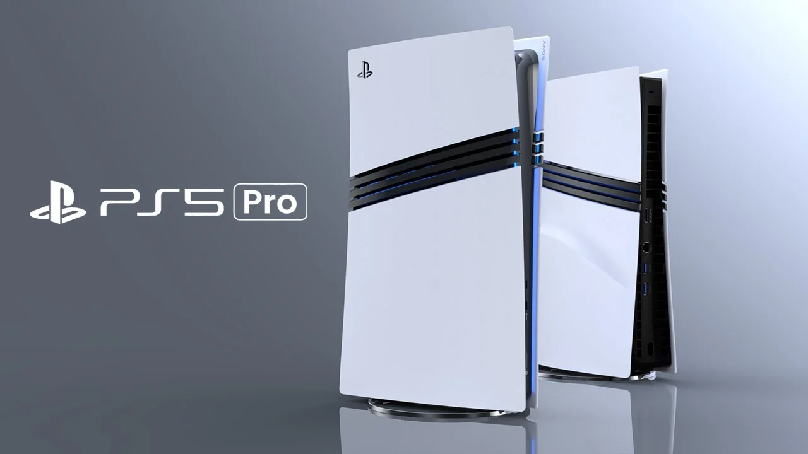

Consolas Destacadas
Playstation 5

PlayStation 5 es una consola de videojuegos de alta gama de Sony Interactive Entertainment lanzada en noviembre de 2020, diseñada para ofrecer rendimiento avanzado, tiempos de carga reducidos y experiencias inmersivas de próxima generación. Equipada con un potente procesador personalizado AMD, almacenamiento SSD ultrarrápido y capacidades de trazado de rayos (ray tracing), la PS5 permite gráficos más realistas, velocidad de respuesta mejorada y soporte para juegos en resolución 4K o más.
Su mando inalámbrico DualSense introduce retroalimentación háptica y gatillos adaptativos que aportan sensaciones físicas durante el juego, añadiendo una capa extra de inmersión. Además, la PS5 ofrece compatibilidad con juegos de generaciones anteriores (backward compatibility), acceso a una amplia biblioteca de títulos exclusivos y servicios online como PlayStation Network y PlayStation Plus, posicionándose como una de las consolas más potentes y populares de la actual generación.
Playstation 5 Pro

PlayStation 5 Pro es una versión más potente de la consola PlayStation 5 Pro lanzada por Sony en noviembre de 2024 que amplía las capacidades de la PS5 original con mejoras centradas en el rendimiento gráfico y la fluidez de los juegos.
Gracias a una GPU más potente, memoria más rápida y tecnologías como el trazado de rayos avanzado y la resolución mejorada con inteligencia artificial (PlayStation Spectral Super Resolution), la PS5 Pro ofrece gráficos más nítidos, tiempos de renderizado más rápidos y experiencias visuales más inmersivas en títulos compatibles, permitiendo jugar en 4K con tasas de fotogramas más altas o incluso soporte 8K y 120 fps en algunos casos.
Además, mantiene compatibilidad con todos los juegos de PS5 y PS4, usa el mismo mando DualSense, e incluye Wi‑Fi 7 y un SSD de gran capacidad, lo que la convierte en una consola ideal para jugadores que buscan la máxima calidad técnica en sus títulos favoritos.
Xbox Series X

Xbox Series X es una consola de videojuegos de alta gama de Microsoft lanzada en noviembre de 2020 que destaca por su potencia, velocidad y compatibilidad con generaciones anteriores de juegos. Diseñada para ofrecer rendimiento de próxima generación, cuenta con un procesador personalizado AMD Zen 2 de ocho núcleos, una GPU RDNA 2 con aproximadamente 12 TFLOPS de potencia gráfica y 16 GB de memoria GDDR6, lo que permite ejecutar juegos en resolución 4K real y hasta 120 fps con tiempos de carga muy reducidos gracias a su SSD personalizado.
Además, la Xbox Series X integra una unidad de disco Blu‑ray UHD 4K, compatibilidad con miles de títulos de Xbox One, Xbox 360 y Xbox original, así como tecnologías como Quick Resume que facilitan cambiar entre juegos rápidamente. Con soporte para HDR, audio envolvente y servicios como Xbox Game Pass, la Series X se posiciona como una de las consolas más completas y potentes de su generación, ofreciendo una experiencia de entretenimiento robusta tanto para jugadores casuales como competitivos.
Xbox Series S

Xbox Series S es una consola de videojuegos de próxima generación de Microsoft lanzada en noviembre de 2020, diseñada como una alternativa más accesible y compacta a la Xbox Series X sin unidad de disco físico.
A pesar de su tamaño reducido y menor potencia gráfica en comparación con su hermana mayor, la Series S ofrece soporte para juegos en resolución hasta 1440p con escalado a 4K, tasas de fotogramas de hasta 120 fps, tiempos de carga rápidos gracias a su SSD personalizado y compatibilidad con miles de títulos de Xbox One, Xbox 360 y Xbox original.
La consola es ideal para jugadores que buscan una experiencia moderna con características como Ray Tracing, audio envolvente y acceso a servicios como Xbox Game Pass, manteniendo un equilibrio entre rendimiento, calidad visual y precio más asequible. Su enfoque en juegos digitales y experiencia fluida la convierte en una opción atractiva dentro de la generación actual de consolas.
Nintendo Switch 2

Nintendo Switch 2 es la consola híbrida de nueva generación de Nintendo lanzada globalmente el 5 de junio de 2025, que mejora la experiencia de la Nintendo Switch original con un hardware más potente, una pantalla más grande y soporte para juegos en resolución 1080p en modo portátil o hasta 4K cuando se conecta al televisor.
La Switch 2 mantiene la versatilidad de ser tanto consola de sobremesa como portátil, incluye mandos Joy‑Con 2 con acoplamiento magnético y nuevas funciones como GameChat para comunicación entre jugadores, y es compatible con una amplia biblioteca de juegos exclusivos y títulos de la generación anterior.
Equipado con almacenamiento interno ampliado, alta tasa de refresco de pantalla y capacidades técnicas potenciadas gracias a un procesador personalizado, la Nintendo Switch 2 ofrece una experiencia fluida y visualmente notable tanto para jugadores casuales como para los que buscan títulos más exigentes.
Esta consola destaca por combinar la portabilidad con una potencia mejorada, conservando la filosofía única de Nintendo en diseño y entretenimiento familiar.
Steam Deck

Valve Steam Deck LCD y su versión avanzada Steam Deck OLED 512GB Handheld Console son consolas portátiles de Valve que combinan un PC de juegos completo con la comodidad de una consola de mano, permitiendo jugar a miles de títulos de la biblioteca de Steam en cualquier lugar.
Diseñadas para ofrecer rendimiento de juegos de PC en formato portátil, incorporan un procesador personalizado AMD con arquitectura Zen 2 y gráficos RDNA 2, memoria de 16 GB y almacenamiento SSD ampliable mediante tarjetas microSD, lo que permite ejecutar desde juegos independientes (indie) hasta títulos triple A con fluidez.
La Steam Deck destaca por su pantalla táctil de alrededor de 7 pulgadas, controles integrados tipo gamepad y opciones de conectividad que permiten incluso conectarla a pantallas externas con salida de vídeo, mientras que la versión OLED ofrece mejor calidad de imagen, mayor frecuencia de refresco y batería optimizada.
Al funcionar con SteamOS y tener acceso a la plataforma Steam completa, esta consola portátil permite descargar, gestionar y jugar tus juegos favoritos de forma nativa, ofreciendo una experiencia única entre consolas tradicionales y computadoras de juegos.